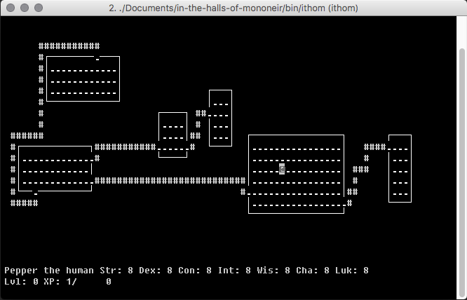

Background
ITHOM is a text-based dungeon-crawling roguelike videogame played in a terminal window.
It began as a small experimental C++ project named Towerlooter, and eventually evolved into what it is now.
It is a callback to the early terminal roguelikes, like
ADOM,
Rogue, and, of course,
NetHack.
The player takes control of a swindling hack who has become entrapped within an enormous dungeon contained inside of a twisted dream.
The goal of the game is to fight your way to the bottom and destroy the host of the nightmare and return to the waking world unscathed.
The ITHOM manual is also currently in production and will be linked to from this page sometime in the future.
ITHOM is currently contained in a private repo on GitHub, but will be opened to the public once development reaches a playable status.
Features
ITHOM features seven unique classes all with different play styles.
It has hundreds of enemies, items, rooms, maps, and more.
Like most roguelikes, it is procedurally generated, allowing for an enormous amount of variation between subsequent playthroughs.
Each class has its own questline to follow and skills to learn.
Media
Here is a development screenshot of ITHOM, running in a terminal display on MacOS.
